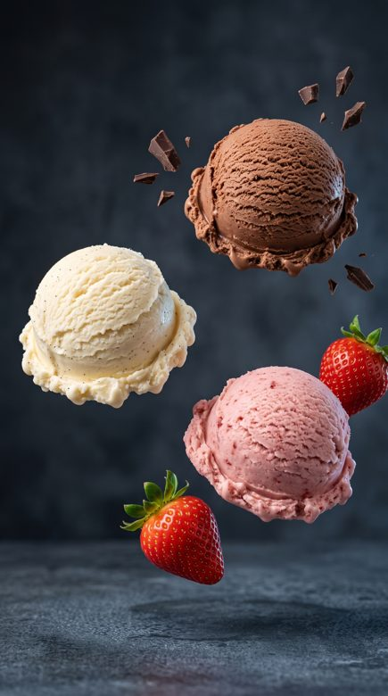
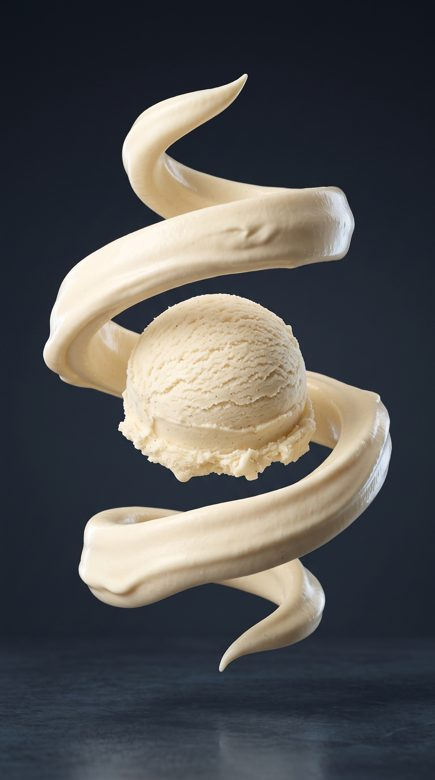

One product.
A world of possibilities.
A working toolkit for product imagery, bilingual campaigns, motion and sound. Built around the decisions that make AI useful: which model, which reference, which quality gate, and at what cost.
Explore AI Content StudioBrowse the workflows. Live generation is available by request.


Current explorationIce cream / concept references